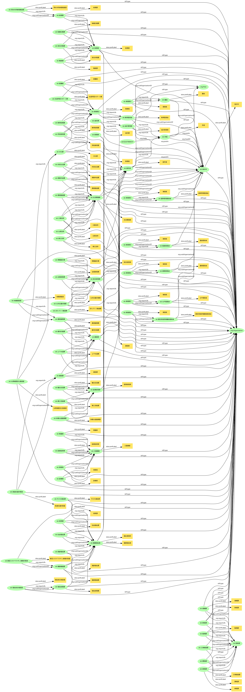

organizational-hierarchy
RDF description of organizational hierarchy of Sakai-city
ソース
- 組織図: https://www.city.fukui-sakai.lg.jp/somu/shisei/gaiyo/soshiki/documents/sosikizu20210401.pdf
- ネットワーク図の生成は神崎さんのツールを使わせてもらっています。 https://www.kanzaki.com/works/2009/pub/graph-draw
- 全部のネットワーク graph-draw.png 
作業と課題
- semantic-digital-agencyを参考に、坂井市の組織図を記述してみました。こちらの動画も参考にしてます。
- 人名はありません。
- ()内のラベルはskos:prefLabelを二つつけているが、これで良いのか？
- 市長から線が伸びていない「議会」等は「坂井市」のsubOrganizationなのか？現在は、org:reportsToをつけずにおいている。
- 点線は何を表しているのか？
- いつのバージョンかが表現できていない。
想定する利用方法
- バージョン情報を付与すればいつの時点でどんな組織体制かを振り返ることが出来る。市の総合計画と照らし合わせて、適切な組織体制になっているかを確認するなど。